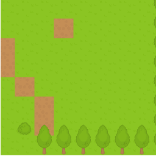

{{GamesSidebar}}
This article covers how to implement scrolling square tilemaps using the Canvas API.
Note: When writing this article, we assumed previous reader knowledge of canvas basics such as how get a 2D canvas context, load images, etc., which is all explained in the Canvas API tutorial, as well as the basic information included in our Tilemaps introduction article. This article also builds upon implementing static square tilemaps — you should read that too if you’ve not done so already.
The camera is an object that holds information about which section of the game world or level is currently being shown. Cameras can either be free-form, controlled by the player (such as in strategy games) or follow an object (such as the main character in platform games.)
Regardless of the type of camera, we would always need information regarding its current position, viewport size, etc. In the demo provided along with this article, these are the parameters the camera has:
x and y: The current position of the camera. In this implementation, we are assuming that (x,y) points to the top left corner of visible portion of the map.width and height: The size of the camera’s viewport.maxX and maxY: The limit for the camera’s position — The lower limit will nearly always be (0,0), and in this case the upper limit is equal to the size of the world minus the size of the camera’s viewport.There are two main differences between rendering scrolling maps vs. static maps:
TODO: show a diagram here explaining this.
To handle these issues, we need to slightly modify the rendering algorithm. Let’s imagine that we have the camera pointing at (5,10). That means that the first tile would be 0x0. In the demo code, the starting point is stored at startCol and startRow. It’s convenient to also pre-calculate the last tile to be rendered.
var startCol = Math.floor(this.camera.x / map.tsize);
var endCol = startCol + (this.camera.width / map.tsize);
var startRow = Math.floor(this.camera.y / map.tsize);
var endRow = startRow + (this.camera.height / map.tsize);Once we have the first tile, we need to calculate how much its rendering (and therefore the rendering of the other tiles) is offset by. Since the camera is pointing at (5, 10), we know that the first tile should be shifted by (-5,-10) pixels. In our demo the shifting amount is stored in the offsetX and offsetY variables.
var offsetX = -this.camera.x + startCol * map.tsize;
var offsetY = -this.camera.y + startRow * map.tsize;With these values in place, the loop that renders the map is quite similar to the one used for rendering static tilemaps. The main difference is that we are adding the offsetX and offsetY values to the target x and y coordinates, and these values are rounded, to avoid artifacts that would result from the camera pointing at positions with floating point numbers.
for (var c = startCol; c <= endCol; c++) {
for (var r = startRow; r <= endRow; r++) {
var tile = map.getTile(c, r);
var x = (c - startCol) * map.tsize + offsetX;
var y = (r - startRow) * map.tsize + offsetY;
if (tile !== 0) { // 0 => empty tile
this.ctx.drawImage(
this.tileAtlas, // image
(tile - 1) * map.tsize, // source x
0, // source y
map.tsize, // source width
map.tsize, // source height
Math.round(x), // target x
Math.round(y), // target y
map.tsize, // target width
map.tsize // target height
);
}
}
}Our scrolling tilemap implementation demo pulls the above code together to show what an implementation of this map looks like. You can take a look at a live demo, and see its source code.

There’s another demo available, that shows how to make the camera follow a character.